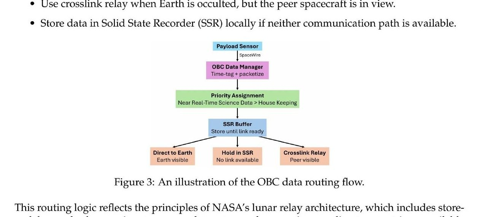
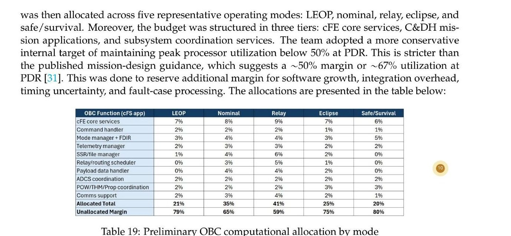
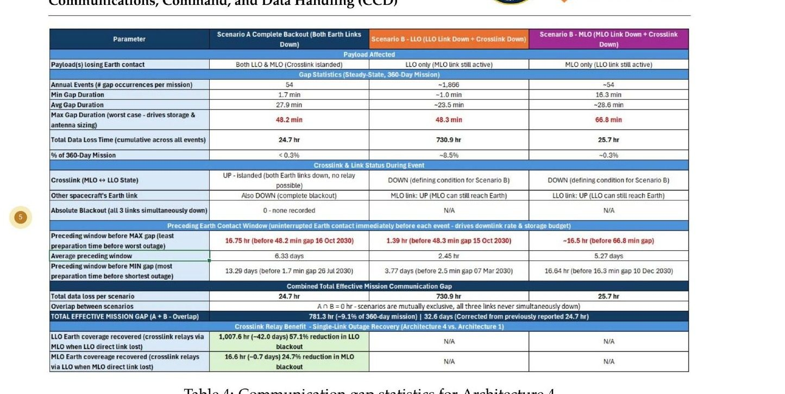

MAE 342 Space System Design
LUREX
Where does the data go when nobody's listening?
Team mission report, taken through Final Design Review. I sat on the Operations/Payload and CCD team and worked primarily on C&DH. My contributions are named per-analysis below.
A dual-orbiter lunar radiation mission. On C&DH the governing question is unglamorous: the payload produces data continuously, the link to Earth exists only sometimes, and every processor, memory and bus number downstream is really an answer to that gap.
The problem
LUREX flies two spacecraft — MiLO in an 8,000 km medium lunar orbit, LiLO in low lunar orbit — to monitor the radiation environment continuously for four years. Both carry direct-to-Earth links, with an S-band crosslink as backup relay when one is occulted.
A radiation payload does not stop producing data because Earth went behind the Moon. Across a year the mission loses 781 hours of Earth contact, and the worst single gap runs 71.3 minutes. Storage has to cover that gap. The processor has to keep up in the busiest mode rather than the average one. The buses have to carry payload, recorder and housekeeping traffic concurrently without contention.
I was on the Operations/Payload and CCD team — sixteen of us across eight subsystems, so the work ran wider than one box. Within CCD my primary responsibility was C&DH: what happens to command, telemetry and science data once it is onboard. A teammate owned the communications link design. On the operations side I carried the risk matrix and the mission cost compliance analysis, both of which meant working across every other subsystem to get numbers that agreed.
What changed after PDR
At PDR we sized the onboard computer with a percentage-based allocation — a single utilization figure per subsystem. The review feedback was that this was not substantiated, and it wasn't: nothing in it traced back to a data rate.
I replaced it with a throughput-driven budget. Supervisory data rates give KIPS by software function and operating mode; KIPS gives required clock speed; clock gives margin against hardware. RAM, recorder capacity and bus throughput were sized independently against the same rates, then integrated into a single closure table. Every number on this page traces back to a measured or specified rate rather than an assumed percentage.
The methodology follows SMAD's computer resource estimation approach, which sizes processors on throughput, execution frequency and memory demand rather than on one abstract utilization figure.
Sizing the processor
The semi-centralized architecture matters here. The primary OBC handles supervisory traffic only — raw IMU and star tracker streams stay on local controllers and never reach it. That distinction is what makes the budget honest: at PDR the OBC was being charged for sensor data it never actually sees. Supervisory ingress is 412.5 kbps on MiLO and 20.75 kbps on LiLO.
I split the software into rate-driven and event-driven functions. Packetization, telemetry handling, recorder activity and comms framing scale with the data they move, so I sized them from the rates. cFS core services, routing logic and FDIR are triggered by events, so they got fixed engineering reserves.
Five modes were budgeted per spacecraft. MiLO relay governs at 3,572 KIPS, dominated by SSR/file management and comms support, because in relay the OBC is simultaneously running local payload management, concurrent recorder read/write, routing, and outbound framing. Converting at CPI = 4 per SMAD, the governing case needs 14.29 MHz against the Sirius QuadCore LEON4FT's 1,000 MHz aggregate.
The subsystem budget still carries a much larger engineering allocation. That is a different quantity and deliberately so — it covers software overhead, cFS messaging, multicore contention, file-system complexity and future growth, none of which the KIPS model captures. The KIPS result proves the hardware closes; the allocation is how we manage risk on top of that.
Memory, recorder, buses
RAM is a fixed software allocation plus a transient flow-through buffer. Fixed comes to 47 MiB — cFS/RTOS runtime and app code, command and telemetry queues, FDIR logs, SSR working cache, routing scheduler state. The buffer holds 10 seconds of peak relay traffic at 1.5× margin; on MiLO that is own data plus crosslink ingest plus DTE replay, 2,024.8 kbps in total. With a further 25% design margin: 63.5 MiB against 512 MiB available.
The recorder is sized on the worst blackout rather than the average one, with a combined coding-and-design margin of 1.69, a 71.30-minute critical interval, and a 2× allowance for a missed contact on top of the blackout. MiLO needs 1,040.7 MB of 32,000 MB. LiLO needs 332.6 MB.
SpaceWire was checked against peak payload, recorder and framing traffic; CAN against peak housekeeping and control. The binding SpaceWire case is concurrent recorder read/write during relay at roughly 2.0 Mbps against 300 Mbps per port. I budgeted the local controllers separately using the same KIPS logic, to confirm that pushing low-level processing off the OBC was real rather than bookkeeping — the ADCS controller governs there at 1,500 KIPS.
Closure
The Sirius QuadCore LEON4FT and Sirius TCM close against every governing case: clock at 70×, RAM at 8.1×, recorder at 30.8× on MiLO and 96.2× on LiLO, SpaceWire above 150×, CAN at 80×.
Two trends hold across the whole analysis. MiLO governs C&DH sizing on both spacecraft, and relay is the governing mode. The load concentrates in comms framing and SSR/file management, and among local controllers, in ADCS. The percentage distribution that appears in the final report is a summary of this work, not the method that produced it — which was the specific ambiguity flagged at PDR.
The operations side
I owned the FDR risk matrix — coordinating with every subsystem on mitigation and documenting what moved since PDR. Near-real-time downlink dropped out of the red region after the medium orbit altitude went from 3,000 to 8,000 km and the architecture moved to dual direct-to-Earth with opportunistic crosslink. Data storage came off the primary risk list on the back of the recorder analysis above. Attitude control instruments and solar array and antenna failures were added, having not been broken out before — the IMU sits at higher likelihood than its neighbours because it is the one attitude component with no redundancy, which LRO heritage supports.
I also gathered cost estimates across all subsystems and built the mission cost compliance analysis against the $175M SMEX cap plus $5M launch services, and refined the operations requirements, constraints and drivers for FDR. All subsystems closed within allocation with reserve remaining.
Both of those jobs are really the same job: getting eight subsystems to hand you numbers that agree with each other. That turned out to be the part of the project I was best at, and it is not a thing you can do from inside one subsystem.
What I'd do differently
The fixed reserves for cFS core, routing and FDIR are engineering allocations, not measurements. So are the 10-second buffer depth and the 1.5× factor on it. They are reasonable first-order numbers for FDR and the margins are large enough that being wrong by 2× changes nothing — but they are the weakest links in the chain, and I'd rather have profiled a real cFS build than reasoned about one.
The margins themselves are worth questioning. 70× on clock and 30× on the recorder are not signs of a well-tuned design; they are signs that the hardware was selected for radiation tolerance and heritage, and the computational demands of a supervisory OBC are simply small next to what a rad-hard quad-core provides. The useful conclusion is not that we have margin but that processing was never the binding constraint on this mission, and we should stop treating it as a design driver.
Documentation

Drop file atassets/lurex/data-flow.jpg

Drop file atassets/lurex/cpu-budget.jpg

Drop file atassets/lurex/comm-gaps.jpg